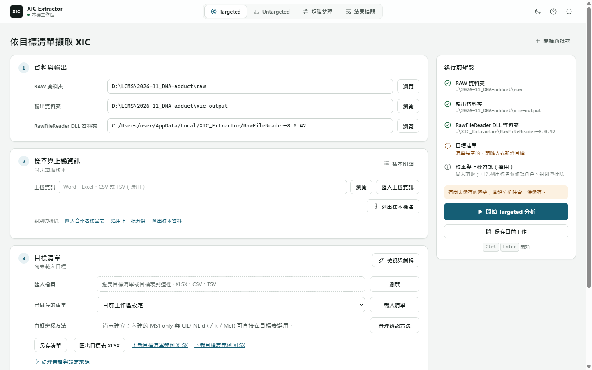

XIC Extractor · 已知目標
從目標清單，
走到可使用的批次結果
準備目標與 RAW，執行後由整批摘要縮到需要查看的樣本。主要交付是一份 workbook；有疑問時再看 XIC，不必先理解程式模組。
01 · 執行
跑一個批次

首次使用先依啟動與 reader 設定完成準備，再選擇分析。
- 選 Targeted Extraction，指定本批 RAW 資料夾。
- 載入已保存的清單／方法，或從目標卡下載 XLSX 範例、編輯並匯入。
- 核對目標、方法、內標配對與樣本資訊；預覽確認後才套用匯入。
- 按 開始 Targeted 分析。完成後從結果動作開啟 workbook。
下一批使用 開始新批次，保留目標與本機 reader 設定。完成後若改輸入，畫面上的舊結果不代表新設定，需另跑一批。
02 · 輸入
先分清楚目標意圖與機器設定
目標表包含名稱、m/z、expected RT、辨識方法、role 與可選的 ISTD 配對。已知目標不代表樣本中一定有訊號；未指定辨識方法的 MS1-only 路徑與有方法條件的判斷也不能混用。
目標清單使用 XLSX，也可匯入 CSV／TSV。目標編輯器的 匯出清單 XLSX 供下批重用；保存批次設定保存本機目前狀態。RAW 路徑與執行資源不屬於目標清單。
完整欄位與自訂方法查 設定參考。
03 · 結果
先開 workbook，不先翻中間檔
完成結果為 xic_results_YYYYMMDD_HHMM.xlsx。先讀 摘要的整批結論與目標提示，再看 需檢查（有項目才出現）。面積提供樣本 × 目標的保存數值。
XIC Results、目標快照、方法證據與 Run Metadata 支持進一步判讀與追溯；完整工作表和欄位查 輸出參考。
04 · 檢閱與使用
有疑問時，由目標縮到樣本與曲線
- 在工作台開啟完成的 XLSX，選擇摘要提示的目標與樣本。
- 一起看 area、RT、counted status 與 review reason。有面積、計入偵測、需要檢閱是不同答案。
- 需要確認峰時再要求 XIC，並提供 source RAW 與 reader；只讀保存的 workbook 值不需要它們。
- 確認方法、單位與內標配對後，再用 面積做預定計算。檢閱不改寫保存的科學判斷。
06 · 遇到問題
先定位失敗，再決定是否重跑
輸入格式錯誤先修訊息指出的檔案、列與欄位；DLL 問題依 reader 設定處理，不使用舊 Xcalibur DLL。個別樣本失敗時查結果中的錯誤與診斷，不把它當作未偵測。